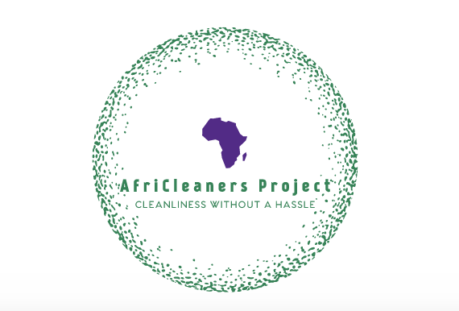

Emmanuel Madi
Data Scientist.
About me
Data scientist & freelance logo designer.
I'm a qualified Financial advisor by trade. That and my love for maths and statistics has made me curios about people's consuming habits, what influences them and what contributes to them being product/service or even brand loyal.
My interest in peoples' consuming habits and fascination with statistics has brought me to the field of data science. I want to use data science to draw up meaningful statisticts, turning data into information and assist companies or clients make informed decisions.
I am a self taught logo designer and believe that demosntrates my ability and willingness to learn and constatly upskill.
Technical Skills
Python
C++
Git
Machining Learning
SQL
My Reputation
Make Umuzi Better
We were tasked to make the Umuzi better food. The angle we choose was to create a food culture title Umuzi Food Club(UFC).
This is a food guide menu-this has most of the food outlets within the raduis that recruit and staff can use to farmiliarise themselves with lunch menus offerings at various palces.The guide also shows outlets that offer deliveries and those that offer discounts.
This afforded people to be budget savvy and promote variety of eating habits. Problem solved: People turned to be buy from outlets that only current recruits and stuff generally knew. Learnings: People who buy out lunch have a varying lunch cost that's affected by their pay days.
https://www.datacamp.com/projects/20 Co Founder.
Case Study - Using Data Science to show the mortality rate of infants and nurses. This project had data that was already collected from 2 clinics, one with senior midwives, the other with most employees coming straight from college.
At the end of the project I learnt that midwives in the 1800s didn't use handsaniters and this lead to many infants passing away just after birth. The first hand sanitiser then became washing powder as discovered by DR Ignaz Semmelweis